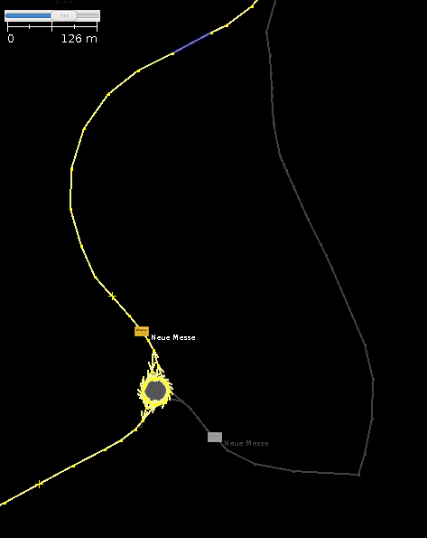
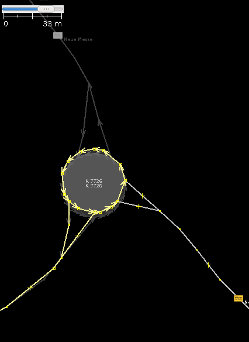

The current OSM API supports the download of the current version of an object (e.g. a relation) with a single API call or over the JOSM remote control.
http://www.openstreetmap.org/api/0.6/relation/21628/full |
OSM-history can do the same but at any given timestamp. Thus you can get OSM-objects from a month ago, one year ago, or just the day before something bad happened with the osm objects.
./osmhistory.py -r 21628 -t 2009-10-01 -o relation_21628_2009-10-01.osm |
The command retrieves the relation 21628 at the timestamp 2009-10-01 and writes the output to the file relation_21628_2009-10-01.osm.
In order to do that the script first searches (with a binary search) the matching version of the given OSM object. Then it collects all objects that are referenced by this object. e.g. a relation references other relations, ways and/or nodes. A way references nodes.
All that objects are downloaded by the script, too. An example output of the script with the executed API calls looks like this:
bisect:relation21628 bisect:/api/0.6/relations?relations=21628 bisect:/api/0.6/relation/21628/4 bisect:/api/0.6/relation/21628/6 bisect:/api/0.6/relation/21628/5 bisect:way8022736 bisect:/api/0.6/ways?ways=8022736 bisect:/api/0.6/way/8022736/4 bisect:/api/0.6/way/8022736/6 bisect:/api/0.6/way/8022736/7 bisect:way19736185 bisect:/api/0.6/ways?ways=19736185 [....] bisect:node59975181 bisect:/api/0.6/nodes?nodes=59975181 bisect:node362803235 bisect:/api/0.6/nodes?nodes=362803235 bisect:/api/0.6/node/362803235/4 bisect:/api/0.6/node/362803235/2 bisect:/api/0.6/node/362803235/3 bisect:node500348455 bisect:/api/0.6/nodes?nodes=500348455 [...] |
After retrieving the history, you can compare the current version of the object and the historic version. You can load the two versions into different layers with JOSM.
| new version in front of the old version | old version in front of the current version, zoomed in |
|---|---|
|  |  |
As you can see on the left picture, the route of the relation has been changed. On the right picture, you can see the moved roundabout.
Example of the historic osm file:
<node uid="110263" timestamp="2009-09-18T15:12:19Z" lon="9.5154672" visible="true" version="4" user="werner2101" lat="47.6790064" id="362803252"> <tag k="osmhistory:old_version_date" v="2_2009-10-01"></tag> </node> <way uid="110263" timestamp="2009-09-18T15:12:22Z" visible="true" version="17" user="werner2101" id="4675294"> <nd ref="29691653"></nd> <nd ref="362606768"></nd> [...] <tag k="maxspeed" v="50"></tag> <tag k="ref" v="K 7726"></tag> <tag k="highway" v="tertiary"></tag> <tag k="osmhistory:old_version_date" v="16_2009-10-01"></tag> </way> <relation uid="110263" timestamp="2009-09-18T15:12:23Z" visible="true" version="7" user="werner2101" id="21628"> <member ref="4675294" role="" type="way"></member> <member ref="8022729" role="" type="way"></member> <member ref="8022735" role="" type="way"></member> [...] <tag k="operator" v="Bodenseekreis"></tag> <tag k="type" v="route"></tag> <tag k="route" v="road"></tag> <tag k="ref" v="K 7726"></tag> <tag k="osmhistory:old_version_date" v="5_2009-10-01"></tag> </relation> |
If other osm users think that the tool is usefull, it's functionality should be included into the OSM api (which is written using Ruby on Rails).